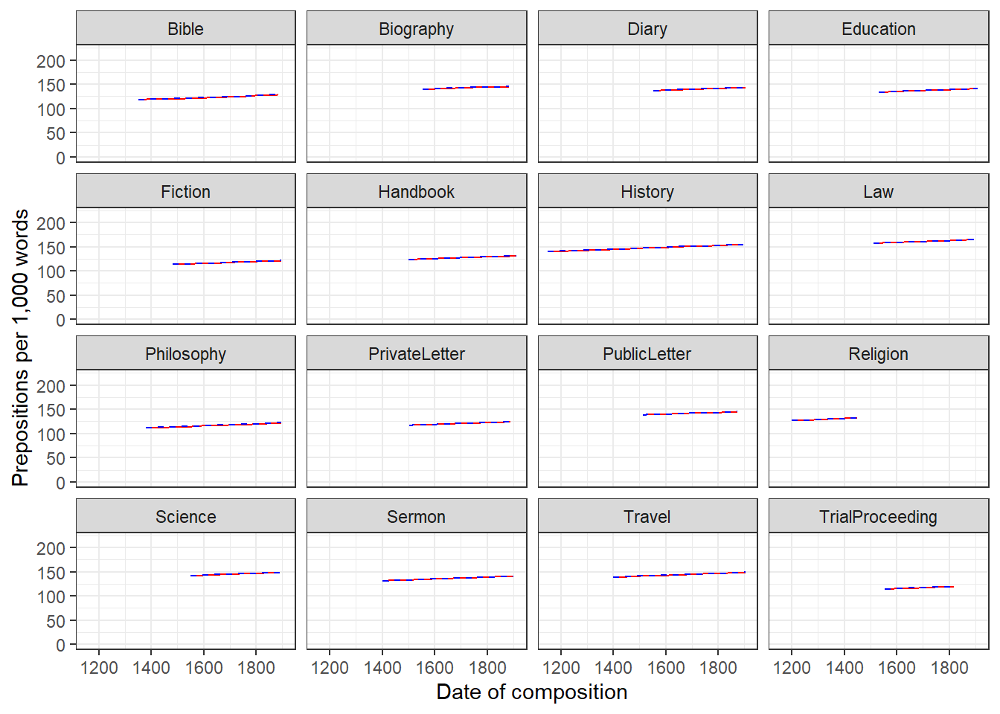
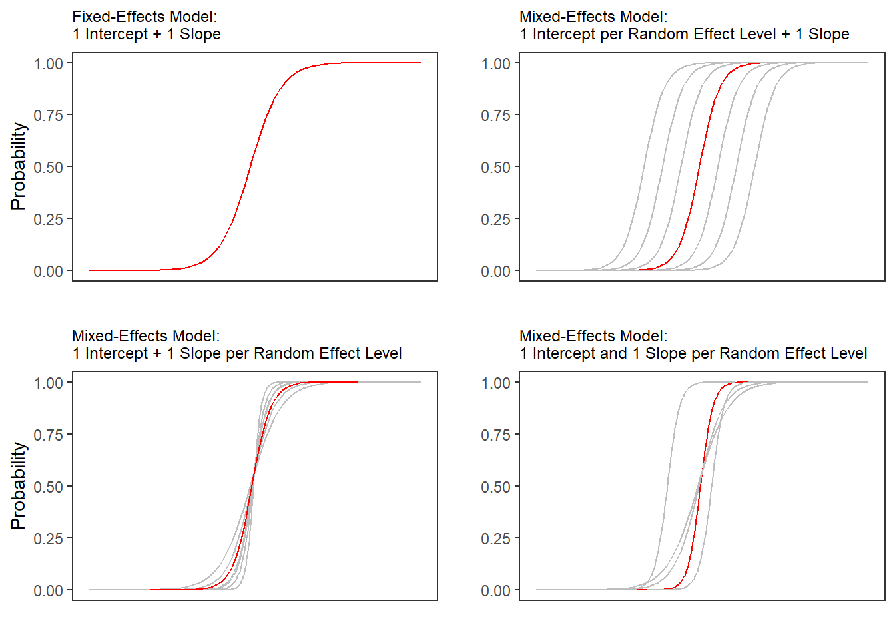
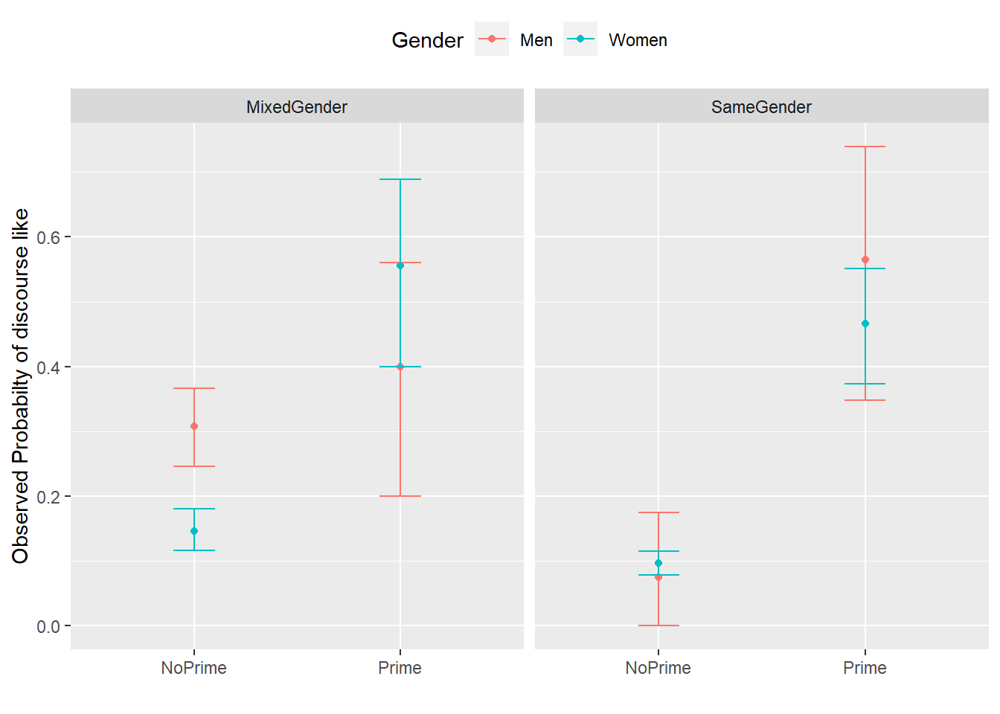

Week 11 Mixed-Effects Regression
This week, we will learn about mixed-effects regressions.
There are two basic types of regression models:
fixed-effects regression models
mixed-effects regression models (which are fitted using the
lme4package (Bates et al. 2015) in this tutorial).
Fixed-effects regression models are models that assume a non-hierarchical data structure, i.e. data where data points are not nested or grouped in higher order categories (e.g. students within classes). The first part of this tutorial focuses on fixed-effects regression models while the second part focuses on mixed-effects regression models.
In contrast to fixed-effects regression models, mixed-effects models assume a hierarchical data structure in which data points are grouped or nested in higher order categories (e.g. students within classes). Mixed-effects models are rapidly increasing in use in data analysis because they allow us to incorporate hierarchical or nested data structures. Mixed-effects models are, of course, an extension of fixed-effects regression models and also multivariate and come in different types.
In the following, we will go over the most relevant and frequently used types of mixed-effect regression models, mixed-effects linear regression models and mixed-effects binomial logistic regression models.
The major difference between these types of models is that they take different types of dependent variables. While linear models take numeric dependent variables, logistic models take nominal variables.
The following focuses on an extension of ordinary multiple linear regressions: mixed-effects regression linear regression. Mixed-effects models have the following advantages over simpler statistical tests:
Mixed-effects models are multivariate, i.e. they test the effect of several predictors simultaneously while controlling for the effect of all other predictors.
Mixed models allow to statistically incorporate within-speaker variability and are thus fit to model hierarchical or nested data structures. This applies if several observations are produced by an individual speaker, for instance.
Mixed-models provide a wealth of diagnostic statistics which enables us to control e.g. (multi-)collinearity, i.e. correlations between predictors, and to test whether conditions or requirements are violated (e.g. homogeneity of variance, etc.).
Major disadvantages of mixed-effects regression modeling are that they are prone to producing high \(\beta\)-errors (see Johnson 2009) and that they require rather large data sets.
# install
install.packages("Boruta")
install.packages("car")
install.packages("emmeans")
install.packages("effects")
install.packages("flextable")
install.packages("ggplot2")
install.packages("ggpubr")
install.packages("Hmisc")
install.packages("knitr")
install.packages("lme4")
install.packages("MASS")
install.packages("mclogit")
install.packages("MuMIn")
install.packages("nlme")
install.packages("ordinal")
install.packages("rms")
install.packages("robustbase")
install.packages("sjPlot")
install.packages("stringr")
install.packages("tibble")
install.packages("dplyr")
install.packages("vcd")
install.packages("vip")
# install klippy for copy-to-clipboard button in code chunks
install.packages("remotes")
remotes::install_github("rlesur/klippy")Now that we have installed the packages, we activate them as shown below.
# set options
options(stringsAsFactors = F) # no automatic data transformation
options("scipen" = 100, "digits" = 12) # suppress math annotation
# load packages
library(Boruta)
library(car)
library(effects)
library(emmeans)
library(flextable)
library(ggfortify)
library(ggplot2)
library(ggpubr)
library(Hmisc)
library(knitr)
library(lme4)
library(MASS)
library(mclogit)
library(MuMIn)
library(nlme)
library(ordinal)
library(rms)
library(robustbase)
library(sjPlot)
library(stringr)
library(tibble)
library(vcd)
library(vip)
# activate klippy for copy-to-clipboard button
klippy::klippy()Once you have installed R and RStudio and initiated the session by executing the code shown above, you are good to go.
11.0.1 Introduction
So far, the regression models that we have used only had fixed-effects. Having only fixed-effects means that all data points are treated as if they are completely independent and thus on the same hierarchical level. However, it is very common that the data is nested in the sense that data points are not independent because they are, for instance produced by the same speaker or are grouped by some other characteristic. In such cases, the data is considered hierarchical and statistical models should incorporate such structural features of the data they work upon. Fortunately, modeling hierarchical or nested data structures is very easy thanks to the lme4 package (Bates et al. 2015).
With respect to regression modeling, hierarchical structures are incorporated by what is called random effects. When models only have a fixed-effects structure, then they make use of only a single intercept and/or slope (as in the left panel in the figure below), while mixed effects models have intercepts for each level of a random effect. If the random effect structure represents speakers then this would mean that a mixed-model would have a separate intercept and/or slope for each speaker (in addition to the overall intercept that is shown as an orange line in the figure below).
The idea behind regression analysis is expressed formally in the equation below where\(f_{(x)}\) is the y-value we want to predict, \(\alpha\) is the intercept (the point where the regression line crosses the y-axis at x = 0), \(\beta\) is the coefficient (the slope of the regression line), and x is the value of a predictor (e.g. 180cm - if we would like to predict the weight of a person based on their height). The \(\epsilon\) is an error term that reflects the difference between the predicted value and the (actually) observed value (\(\epsilon\) is thus a residual that is important as regressions assume that residuals are, e.g., normally distributed).
\[\begin{equation} f_{(x)} = \alpha + \beta x + \epsilon \end{equation}\]
In other words, to estimate how much some weights who is 180cm tall, we would multiply the coefficient (slope of the line) with 180 (\(x\)) and add the value of the intercept (point where line crosses the y-axis at x = 0).
The equation below represents a formal representation of a mixed-effects regression with varying intercepts (see Winter 2019, 235).
\[\begin{equation} f_{(x)} = \alpha_{i} + \beta x + \epsilon \end{equation}\]
In this random intercept model, each level of a random variable has a different intercept. To predict the value of a data point, we would thus take the appropriate intercept value (the model intercept + the intercept of the random effect) and add the product of the predictor coefficient and the value of x.
Finally, the equation below represents a formal representation of a mixed-effects regression with varying intercepts and varying slopes (see Winter 2019, 235).
\[\begin{equation} f_{(x)} = \alpha_{i} + \beta_{i}x + \epsilon \end{equation}\]
In this last model, each level of a random variable has a different intercept and a different slope. To predict the value of a data point, we would thus take the appropriate intercept value (the model intercept + the intercept of the random effect) and add the coefficient of that random effect level multiplied by the value of x.
11.0.2 Random Effects
Random Effects can be visualized using two parameters: the intercept (the point where the regression line crosses the y-axis at x = 0) and the slope (the acclivity of the regression line). In contrast to fixed-effects models, that have only 1 intercept and one slope (left panel in the figure above), mixed-effects models can therefore have various random intercepts (center panel) or various random slopes, or both, various random intercepts and various random slopes (right panel).
What features do distinguish random and fixed effects?
Random effects represent a higher level variable under which data points are grouped. This implies that random effects must be categorical (or nominal but they a´cannot be continuous!) (see Winter 2019, 236).
Random effects represent a sample of an infinite number of possible levels. For instance, speakers, trials, items, subjects, or words represent a potentially infinite pool of elements from which many different samples can be drawn. Thus, random effects represent a random sample sample. Fixed effects, on the other hand, typically do not represent a random sample but a fixed set of variable levels (e.g. Age groups, or parts-of-speech).
Random effects typically represent many different levels while fixed effects typically have only a few. Zuur, Hilbe, and Ieno (2013) propose that a variable may be used as a fixed effect if it has less than 5 levels while it should be treated as a random effect if it has more than 10 levels. Variables with 5 to 10 levels can be used as both. However, this is a rule of thumb and ignores the theoretical reasons (random sample and nestedness) for considering something as a random effect and it also is at odds with the way that repeated measures are models (namely as mixed effects) although they typically only have very few levels.
Fixed effects represent an effect that if we draw many samples, the effect would be consistent across samples (Winter 2019) while random effects should vary for each new sample that is drawn.
In the following, we will only focus on models with random intercepts because this is the more common method and because including both random intercepts and random slopes requires larger data sets (but have a better fit because intercepts are not forced to be parallel and the lines therefore have a better fit). You should, however, always think about what random effects structure is appropriate for your model - a very recommendable explanation of how to chose which random effects structure is best (and about what the determining factors for this decision are) is give in Winter (2019, 241–44). Also, consider the center and the right plots above to understand what is meant by random intercepts and random slopes.
After adding random intercepts, predictors (or fixed effects) are added to the model (just like with multiple regression). So mixed-effects are called mixed-effects because they contain both random and fixed effects.
In terms of general procedure, random effects are added first, and only after we have ascertained that including random effects is warranted, we test whether including fixed-effects is warranted (Field, Miles, and Field 2012). We test whether including random effects is warranted by comparing a model, that bases its estimates of the depended variable solely on the base intercept (the mean), with a model, that bases its estimates of the dependent variable solely on the intercepts of the random effect. If the random-effect model explains significantly more variance than the simple model without random effect structure, then we continue with the mixed-effects model. In other words, including random effects is justified if they reduce residual deviance.
11.0.3 Example: Preposition Use across Time by Genre
To explore how to implement a mixed-effects model in R we revisit the preposition data that contains relative frequencies of prepositions in English texts written between 1150 and 1913. As a first step, and to prepare our analysis, we load necessary R packages, specify options, and load as well as provide an overview of the data.
# load data
lmmdata <- base::readRDS(url("https://slcladal.github.io/data/lmd.rda", "rb")) %>%
# convert date into a numeric variable
dplyr::mutate(Date = as.numeric(Date))Date | Genre | Text | Prepositions | Region |
1,736 | Science | albin | 166.01 | North |
1,711 | Education | anon | 139.86 | North |
1,808 | PrivateLetter | austen | 130.78 | North |
1,878 | Education | bain | 151.29 | North |
1,743 | Education | barclay | 145.72 | North |
1,908 | Education | benson | 120.77 | North |
1,906 | Diary | benson | 119.17 | North |
1,897 | Philosophy | boethja | 132.96 | North |
1,785 | Philosophy | boethri | 130.49 | North |
1,776 | Diary | boswell | 135.94 | North |
1,905 | Travel | bradley | 154.20 | North |
1,711 | Education | brightland | 149.14 | North |
1,762 | Sermon | burton | 159.71 | North |
1,726 | Sermon | butler | 157.49 | North |
1,835 | PrivateLetter | carlyle | 124.16 | North |
The data set contains the date when the text was written (Date), the genre of the text (Genre), the name of the text (Text), the relative frequency of prepositions in the text (Prepositions), and the region in which the text was written (Region). We now plot the data to get a first impression of its structure.
p1 <- ggplot(lmmdata, aes(x = Date, y = Prepositions)) +
geom_point() +
geom_smooth(method = "lm", se = F, color = "red", linetype = "dashed") +
theme_bw() +
labs(y = "Frequency\n(Prepositions)")
p2 <- ggplot(lmmdata, aes(x = reorder(Genre, -Prepositions), y = Prepositions)) +
geom_boxplot() +
theme_bw() +
theme(axis.text.x = element_text(angle=90)) +
labs(x = "Genre", y = "Frequency\n(Prepositions)")
p3 <- ggplot(lmmdata, aes(Prepositions)) +
geom_histogram() +
theme_bw() +
labs(y = "Count", x = "Frequency (Prepositions)")
grid.arrange(grobs = list(p1, p2, p3), widths = c(1, 1), layout_matrix = rbind(c(1, 1), c(2, 3)))
The scatter plot in the upper panel indicates that the use of prepositions has moderately increased over time while the boxplots in the lower left panel show that the genres differ quite substantially with respect to their median frequencies of prepositions per text. Finally, the histogram in the lower right panel show that preposition use is distributed normally with a mean of 132.2 prepositions per text.
p4 <- ggplot(lmmdata, aes(Date, Prepositions)) +
geom_point() +
labs(x = "Year", y = "Prepositions per 1,000 words") +
geom_smooth(method = "lm") +
theme_bw()
p5 <- ggplot(lmmdata, aes(Region, Prepositions)) +
geom_boxplot() +
labs(x = "Region", y = "Prepositions per 1,000 words") +
geom_smooth(method = "lm") +
theme_bw()
grid.arrange(p4, p5, nrow = 1)ggplot(lmmdata, aes(Date, Prepositions)) +
geom_point() +
facet_wrap(~ Genre, nrow = 4) +
geom_smooth(method = "lm") +
theme_bw() +
labs(x = "Date of composition", y = "Prepositions per 1,000 words") +
coord_cartesian(ylim = c(0, 220))Centering or even scaling numeric variables is useful for later interpretation of regression models: if the date variable were not centered, the regression would show the effects of variables at year 0(!). If numeric variables are centered, other variables are variables are considered relative not to 0 but to the mean of that variable (in this case the mean of years in our data). Centering simply means that the mean of the numeric variable is subtracted from each value.
lmmdata$DateUnscaled <- lmmdata$Date
lmmdata$Date <- scale(lmmdata$Date, scale = F)Date | Genre | Text | Prepositions | Region | DateUnscaled |
109.8696461825 | Science | albin | 166.01 | North | 1,736 |
84.8696461825 | Education | anon | 139.86 | North | 1,711 |
181.8696461825 | PrivateLetter | austen | 130.78 | North | 1,808 |
251.8696461825 | Education | bain | 151.29 | North | 1,878 |
116.8696461825 | Education | barclay | 145.72 | North | 1,743 |
281.8696461825 | Education | benson | 120.77 | North | 1,908 |
279.8696461825 | Diary | benson | 119.17 | North | 1,906 |
270.8696461825 | Philosophy | boethja | 132.96 | North | 1,897 |
158.8696461825 | Philosophy | boethri | 130.49 | North | 1,785 |
149.8696461825 | Diary | boswell | 135.94 | North | 1,776 |
278.8696461825 | Travel | bradley | 154.20 | North | 1,905 |
84.8696461825 | Education | brightland | 149.14 | North | 1,711 |
135.8696461825 | Sermon | burton | 159.71 | North | 1,762 |
99.8696461825 | Sermon | butler | 157.49 | North | 1,726 |
208.8696461825 | PrivateLetter | carlyle | 124.16 | North | 1,835 |
We now set up a fixed-effects model with the glm function and a mixed-effects model using the glmer function from the lme4 package (Bates et al. 2015) with Genre as a random effect.
# generate models
m0.glm <- glm(Prepositions ~ 1, family = gaussian, data = lmmdata)
m0.lmer = lmer(Prepositions ~ 1 + (1|Genre), REML = T, data = lmmdata)Now that we have created the base-line models, we will test whether including a random effect structure is mathematically justified. It is important to note here that we are not going to test if including a random effect structure is theoretically motivated but simply if it causes a decrease in variance.
11.0.4 Testing Random Effects
As a first step in the modeling process, we now need to determine whether or not including a random effect structure is justified. We do so by comparing the AIC of the base-line model without random intercepts to the AIC of the model with random intercepts.
AIC(logLik(m0.glm))## [1] 4718.19031114AIC(logLik(m0.lmer))## [1] 4497.77554693The inclusion of a random effect structure with random intercepts is justified as the AIC of the model with random intercepts is substantially lower than the AIC of the model without random intercepts.
While I do not how how to test if including a random effect is justified, there are often situations, which require to test exactly which random effect structure is best. When doing this, it is important to use restricted
maximum likelihood (REML = TRUE or method = REML) rather than maximum likelihood (see Pinheiro and Bates 2000; Winter 2019, 226).
# generate models with 2 different random effect structures
ma.lmer = lmer(Prepositions ~ Date + (1|Genre), REML = T, data = lmmdata)
mb.lmer = lmer(Prepositions ~ Date + (1 + Date | Genre), REML = T, data = lmmdata)
# compare models
anova(ma.lmer, mb.lmer, test = "Chisq", refit = F)## Data: lmmdata
## Models:
## ma.lmer: Prepositions ~ Date + (1 | Genre)
## mb.lmer: Prepositions ~ Date + (1 + Date | Genre)
## npar AIC BIC logLik deviance Chisq Df
## ma.lmer 4 4499.148092 4516.292084 -2245.574046 4491.148092
## mb.lmer 6 4486.699509 4512.415498 -2237.349755 4474.699509 16.44858 2
## Pr(>Chisq)
## ma.lmer
## mb.lmer 0.00026806 ***
## ---
## Signif. codes: 0 '***' 0.001 '**' 0.01 '*' 0.05 '.' 0.1 ' ' 1The model comparison shows that the model with the more complex random effect structure has a significantly better fit to the data compared with the model with the simpler random effect structure. However, we will continue with the model with the simpler structure because this is just an example.
NOTE
In a real analysis, we would switch to a model with random intercepts and random slopes for Genre because it has a significantly better fit to the data.
11.0.5 Model Fitting
After having determined that including a random effect structure is justified, we can continue by fitting the model and including diagnostics as we go. Including diagnostics in the model fitting process can save time and prevent relying on models which only turn out to be unstable if we would perform the diagnostics after the fact.
We begin fitting our model by adding Date as a fixed effect and compare this model to our mixed-effects base-line model to see if Date improved the model fit by explaining variance and if Date significantly correlates with our dependent variable (this means that the difference between the models is the effect (size) of Date!)
m1.lmer <- lmer(Prepositions ~ (1|Genre) + Date, REML = T, data = lmmdata)
anova(m1.lmer, m0.lmer, test = "Chi")## refitting model(s) with ML (instead of REML)## Data: lmmdata
## Models:
## m0.lmer: Prepositions ~ 1 + (1 | Genre)
## m1.lmer: Prepositions ~ (1 | Genre) + Date
## npar AIC BIC logLik deviance Chisq Df
## m0.lmer 3 4501.947337 4514.805331 -2247.973668 4495.947337
## m1.lmer 4 4495.017736 4512.161728 -2243.508868 4487.017736 8.9296 1
## Pr(>Chisq)
## m0.lmer
## m1.lmer 0.0028059 **
## ---
## Signif. codes: 0 '***' 0.001 '**' 0.01 '*' 0.05 '.' 0.1 ' ' 1## refitting model(s) with ML (instead of REML)The model with Date is the better model (significant p-value and lower AIC). The significant p-value shows that Date correlates significantly with Prepositions (\(\chi\)2(1): 8.929600937903, p = 0.00281) . The \(\chi\)2 value here is labeled Chisq and the degrees of freedom are calculated by subtracting the smaller number of DFs from the larger number of DFs.
We now test whether Region should also be part of the final minimal adequate model. The easiest way to add predictors is by using the update function (it saves time and typing).
# generate model
m2.lmer <- update(m1.lmer, .~.+ Region)
# test vifs
car::vif(m2.lmer)## Date Region
## 1.20287667936 1.20287667936# compare models
anova(m2.lmer, m1.lmer, test = "Chi")## refitting model(s) with ML (instead of REML)## Data: lmmdata
## Models:
## m1.lmer: Prepositions ~ (1 | Genre) + Date
## m2.lmer: Prepositions ~ (1 | Genre) + Date + Region
## npar AIC BIC logLik deviance Chisq Df
## m1.lmer 4 4495.017736 4512.161728 -2243.508868 4487.017736
## m2.lmer 5 4494.624343 4516.054333 -2242.312171 4484.624343 2.39339 1
## Pr(>Chisq)
## m1.lmer
## m2.lmer 0.12185Three things tell us that Region should not be included:
the AIC does not decrease,
the BIC increases(!), and
the p-value is higher than .05.
This means, that we will continue fitting the model without having Region included. Well… not quite - just as a note on including variables: while Region is not significant as a main effect, it must still be included in a model if it were part of a significant interaction. To test if this is indeed the case, we fit another model with the interaction between Date and Region as predictor.
# generate model
m3.lmer <- update(m1.lmer, .~.+ Region*Date)
# extract vifs
car::vif(m3.lmer)## Date Region Date:Region
## 1.96923042276 1.20324697637 1.78000887978# compare models
anova(m3.lmer, m1.lmer, test = "Chi")## refitting model(s) with ML (instead of REML)## Data: lmmdata
## Models:
## m1.lmer: Prepositions ~ (1 | Genre) + Date
## m3.lmer: Prepositions ~ (1 | Genre) + Date + Region + Date:Region
## npar AIC BIC logLik deviance Chisq Df
## m1.lmer 4 4495.017736 4512.161728 -2243.508868 4487.017736
## m3.lmer 6 4496.124872 4521.840861 -2242.062436 4484.124872 2.89286 2
## Pr(>Chisq)
## m1.lmer
## m3.lmer 0.23541Again, the high p-value and the increase in AIC and BIC show that we have found our minimal adequate model with only contains Date as a main effect. In a next step, we can inspect the final minimal adequate model, i.e. the most parsimonious (the model that explains a maximum of variance with a minimum of predictors).
# inspect results
summary(m1.lmer)## Linear mixed model fit by REML ['lmerMod']
## Formula: Prepositions ~ (1 | Genre) + Date
## Data: lmmdata
##
## REML criterion at convergence: 4491.1
##
## Scaled residuals:
## Min 1Q Median 3Q Max
## -3.734915441 -0.657038004 0.005865025 0.661298615 3.596659863
##
## Random effects:
## Groups Name Variance Std.Dev.
## Genre (Intercept) 159.021120 12.6103576
## Residual 228.764179 15.1249522
## Number of obs: 537, groups: Genre, 16
##
## Fixed effects:
## Estimate Std. Error t value
## (Intercept) 133.88516211469 3.24749296248 41.22724
## Date 0.01894493515 0.00632363682 2.99589
##
## Correlation of Fixed Effects:
## (Intr)
## Date 0.00511.0.6 Model Diagnostics
We can now evaluate the goodness of fit of the model and check if mathematical requirements and assumptions have been violated. In a first step, we generate diagnostic plots that focus on the random effect structure.
plot(m1.lmer, Genre ~ resid(.), abline = 0 ) # generate diagnostic plotsThe plot shows that there are some outliers (points outside the boxes) and that the variability within letters is greater than in other genres we therefore examine the genres in isolation standardized residuals versus fitted values (Pinheiro and Bates 2000, 175).
plot(m1.lmer, resid(., type = "pearson") ~ fitted(.) | Genre, id = 0.05,
adj = -0.3, pch = 20, col = "gray40")The plot shows the standardized residuals (or Pearson’s residuals) versus fitted values and suggests that there are outliers in the data (the names elements in the plots). To check if these outliers are a cause for concern, we will now use a Levene’s test to check if the variance is distributed homogeneously (homoscedasticity) or whether the assumption of variance homogeneity is violated (due to the outliers).
NOTE
The use of Levene’s test to check if the model is heteroscedastic is generally not recommended as it is too lax when dealing with few observations (because in such cases it does not have the power to identify heteroscedasticity) while it is too harsh when dealing with many observations (when heteroscedasticity typically is not a severe problem).
We use Levene’s test here merely to check if it substantiates the impressions we got from the visual inspection.
# check homogeneity
leveneTest(lmmdata$Prepositions, lmmdata$Genre, center = mean)## Warning in leveneTest.default(lmmdata$Prepositions, lmmdata$Genre, center =
## mean): lmmdata$Genre coerced to factor.## Levene's Test for Homogeneity of Variance (center = mean)
## Df F value Pr(>F)
## group 15 1.74289 0.039906 *
## 521
## ---
## Signif. codes: 0 '***' 0.001 '**' 0.01 '*' 0.05 '.' 0.1 ' ' 1The Levene’s test shows that the variance is distributed unevenly across genres which means that we do not simply continue but should either remove problematic data points (outliers) or use a weighing method.
In this case, we create a new model which uses weights to compensate for heterogeneity of variance and thus the influence of outliers - which is an alternative to removing the data points and rerunning the analysis (Pinheiro and Bates 2000, 177). However, to do so, we need to use a different function (the lme function) which means that we have to create two models: the old minimal adequate model and the new minimal adequate model with added weights. After we have created these models, we will compare them to see if including weights has improved the fit.
# generate models
m4.lme = lme(Prepositions ~ Date, random = ~1|Genre, data = lmmdata, method = "ML")
m5.lme <- update(m4.lme, weights = varIdent(form = ~ 1 | Genre))
# compare models
anova(m5.lme, m4.lme)## Model df AIC BIC logLik Test L.Ratio
## m5.lme 1 19 4485.84955674 4567.28352054 -2223.92477837
## m4.lme 2 4 4495.01773596 4512.16172834 -2243.50886798 1 vs 2 39.168179218
## p-value
## m5.lme
## m4.lme 0.0006The weight model (m5.lme) that uses weights to account for unequal variance is performing significantly better than the model without weights (m4.lme) and we therefore switch to the weight model and inspect its parameters.
# inspect results
summary(m5.lme) ## Linear mixed-effects model fit by maximum likelihood
## Data: lmmdata
## AIC BIC logLik
## 4485.84955674 4567.28352054 -2223.92477837
##
## Random effects:
## Formula: ~1 | Genre
## (Intercept) Residual
## StdDev: 12.2632032163 14.3426445645
##
## Variance function:
## Structure: Different standard deviations per stratum
## Formula: ~1 | Genre
## Parameter estimates:
## Bible Biography Diary Education Fiction
## 1.000000000000 0.340701771856 0.869501976916 0.788834248844 0.911675378173
## Handbook History Law Philosophy PrivateLetter
## 1.096535269938 0.978707872018 0.784941702906 0.736961192712 1.190582623271
## PublicLetter Religion Science Sermon Travel
## 1.218890753405 0.974606831066 0.848567487437 0.970833325288 1.086199353525
## TrialProceeding
## 1.260153087501
## Fixed effects: Prepositions ~ Date
## Value Std.Error DF t-value p-value
## (Intercept) 133.964016839 3.144354487162 520 42.6046164280 0.0000
## Date 0.021741986 0.005454722618 520 3.9859013041 0.0001
## Correlation:
## (Intr)
## Date 0.004
##
## Standardized Within-Group Residuals:
## Min Q1 Med Q3
## -3.3191182295849 -0.6797238894929 0.0146851603609 0.6987176583336
## Max
## 3.1038751329602
##
## Number of Observations: 537
## Number of Groups: 16We can also use an ANOVA display which is more to the point.
anova(m5.lme) ## numDF denDF F-value p-value
## (Intercept) 1 520 1813.900146411 <.0001
## Date 1 520 15.887409206 0.0001As we did before, we now check, whether the final minimal model (with weights) outperforms an intercept-only base-line model.
# generate base-line model
m0.lme = lme(Prepositions ~ 1, random = ~1|Genre, data = lmmdata, method = "ML", weights = varIdent(form = ~ 1 | Genre))
anova(m0.lme, m5.lme) # test if date is significant## Model df AIC BIC logLik Test L.Ratio
## m0.lme 1 18 4496.28563020 4573.43359590 -2230.14281510
## m5.lme 2 19 4485.84955674 4567.28352054 -2223.92477837 1 vs 2 12.4360734565
## p-value
## m0.lme
## m5.lme 0.0004Our final minimal adequate model with weights performs significantly better than an intercept only base-line model. Before doing the final diagnostics, we well inspect the estimates for the random effect structure to check if there are values which require further inspection (e.g. because they are drastically different from all other values).
# extract estimates and sd for fixed and random effects
intervals(m5.lme) ## Approximate 95% confidence intervals
##
## Fixed effects:
## lower est. upper
## (Intercept) 127.7983315716201 133.9640168390850 140.129702106550
## Date 0.0110459582366 0.0217419859978 0.032438013759
##
## Random Effects:
## Level: Genre
## lower est. upper
## sd((Intercept)) 8.52514057745 12.2632032163 17.6403135829
##
## Variance function:
## lower est. upper
## Biography 0.213870544255 0.340701771856 0.542747472543
## Diary 0.631713450099 0.869501976916 1.196798465732
## Education 0.579213541409 0.788834248844 1.074317894289
## Fiction 0.652906035761 0.911675378173 1.273004000030
## Handbook 0.783823096627 1.096535269938 1.534006338153
## History 0.732525426627 0.978707872018 1.307625734115
## Law 0.555681194836 0.784941702906 1.108789505001
## Philosophy 0.465013384401 0.736961192712 1.167948746814
## PrivateLetter 0.951212675496 1.190582623271 1.490189333417
## PublicLetter 0.947171990620 1.218890753405 1.568558491434
## Religion 0.669371173523 0.974606831066 1.419031043959
## Science 0.553337931562 0.848567487437 1.301314693361
## Sermon 0.729600884590 0.970833325288 1.291825935791
## Travel 0.792727800962 1.086199353525 1.488315452248
## TrialProceeding 0.868924800720 1.260153087501 1.827529612024
##
## Within-group standard error:
## lower est. upper
## 11.8507448562 14.3426445645 17.3585251898The random effect estimates do not show any outliers or drastically increased or decreased values which means that the random effect structure is fine.
11.0.7 Effect Sizes
We will now extract effect sizes (in the example: the effect size of Date) and calculate normalized effect size measures (this effect size measure works for all fixed effects). When you have factorial design, you can take the square root of the squared t-value divided by the t-value squared plus the degrees of freedom to calculate the effect size:
\[\begin{equation} r = \sqrt{ \frac{ t^2}{(t^2 + df) } } = \sqrt{ \frac{ 3.99^2}{(3.99^2 + 520) } } = 0.172 \end{equation}\]
NOTE
Two words of warning though:
br>1. In our case, the effect we are interested in is not factorial but continuous which means that we should not use this effect size measure. We only show this here as an example for how you can calculate the effect size measure r.
2. Only apply this function to main effects that are not involved in interactions as they are meaningless because the amount of variance explained by main effects involved in interactions is unclear (Field, Miles, and Field 2012, 641).
sjPlot::tab_model(m5.lme)| Prepositions | |||
|---|---|---|---|
| Predictors | Estimates | CI | p |
| (Intercept) | 133.96 | 127.80 – 140.13 | <0.001 |
| Date | 0.02 | 0.01 – 0.03 | <0.001 |
| Random Effects | |||
| σ2 | 205.71 | ||
| τ00 Genre | 150.39 | ||
| N Genre | 16 | ||
| Observations | 537 | ||
| Marginal R2 / Conditional R2 | 0.030 / NA | ||
NOTE
The R2 values of the summary table are incorrect (as indicated by the missing conditional R2 value). The more appropriate conditional and marginal coefficient of determination for generalized mixed-effect models can be extracted using the r.squaredGLMM function from the MuMIn package (Barton 2020).
The marginal R2 (marginal coefficient of determination) represents the variance explained by the fixed effects while the conditional R2 is interpreted as a variance explained by the entire model, including both fixed and random effects (Bartoń 2020).
The respective call for the model is:
# extract R2s
r.squaredGLMM(m1.lmer)## R2m R2c
## [1,] 0.0121971160211 0.417270545308The effects can be visualized using the plot_model function from the sjPlot package (Lüdecke 2021).
sjPlot::plot_model(m5.lme, type = "pred", terms = c("Date")) +
# show uncentered date rather than centered date
scale_x_continuous(name = "Date",
breaks = seq(-500, 300, 100),
labels = seq(1150, 1950, 100))
While we have already shown that the effect of Date is significant, it is small which means that the number of prepositions per text does not correlate very strongly with time. This suggests that other factors that are not included in the model also impact the frequency of prepositions (and probably more meaningfully, too).
Before turning to the diagnostics, we will use the fitted (or predicted) and the observed values with a regression line for the predicted values. This will not only show how good the model fit the data but also the direction and magnitude of the effect.
# extract predicted values
lmmdata$Predicted <- predict(m5.lme, lmmdata)
# plot predicted values
ggplot(lmmdata, aes(DateUnscaled, Predicted)) +
facet_wrap(~Genre) +
geom_point(aes(x = DateUnscaled, y = Prepositions), color = "gray80", size = .5) +
geom_smooth(aes(y = Predicted), color = "gray20", linetype = "solid",
se = T, method = "lm") +
guides(color=guide_legend(override.aes=list(fill=NA))) +
theme_set(theme_bw(base_size = 10)) +
theme(legend.position="top", legend.title = element_blank(),
panel.grid.major = element_blank(),
panel.grid.minor = element_blank()) +
xlab("Date of composition")
11.0.8 Model Diagnostics
We now create diagnostic plots. What we wish to see in the diagnostic plots is a cloud of dots in the middle of the window without any structure. What we do not want to see is a funnel-shaped cloud because this indicates an increase of the errors/residuals with an increase of the predictor(s) (because this would indicate heteroscedasticity) (Pinheiro and Bates 2000, 182).
# start plotting
par(mfrow = c(2, 2)) # display plots in 2 rows and 2 columns
plot(m5.lme, pch = 20, col = "black", lty = "dotted"); par(mfrow = c(1, 1))
What a wonderful unstructured cloud - the lack of structure tells us that the model is “healthy” and does not suffer from heteroscedasticity. We will now create more diagnostic plots to find potential problems (Pinheiro and Bates 2000, 21).
# fitted values by Genre
plot(m5.lme, form = resid(., type = "p") ~ fitted(.) | Genre, abline = 0,
cex = .5, pch = 20, col = "black")In contrast to the unweight model, no data points are named which indicates that the outliers do no longer have unwarranted influence on the model. Now, we check the residuals of fitted values against observed values (Pinheiro and Bates 2000, 179). What we would like to see is a straight, upwards going line.
# residuals of fitted values against observed
qqnorm(m5.lme, pch = 20, col = "black")A beautiful, straight line! The qqplot does not indicate any problems. It is, unfortunately, rather common that the dots deviate from the straight line at the very bottom or the very top which means that the model is good at estimating values around the middle of the dependent variable but rather bad at estimating lower or higher values. Next, we check the residuals by “Genre” (Pinheiro and Bates 2000, 179).
# residuals by genre
qqnorm(m5.lme, ~resid(.) | Genre, pch = 20, col = "black" )Beautiful straight lines - perfection! Now, we inspect the observed responses versus the within-group fitted values (Pinheiro and Bates 2000, 178).
# observed responses versus the within-group fitted values
plot(m5.lme, Prepositions ~ fitted(.), id = 0.05, adj = -0.3,
xlim = c(80, 220), cex = .8, pch = 20, col = "blue")
Although some data points are named, the plot does not show any structure, like a funnel, which would have been problematic.
11.0.9 Reporting Results
Before we do the write-up, we have a look at the model summary as this will provide us with at least some of the parameters that we want to report.
summary(m5.lme)## Linear mixed-effects model fit by maximum likelihood
## Data: lmmdata
## AIC BIC logLik
## 4485.84955674 4567.28352054 -2223.92477837
##
## Random effects:
## Formula: ~1 | Genre
## (Intercept) Residual
## StdDev: 12.2632032163 14.3426445645
##
## Variance function:
## Structure: Different standard deviations per stratum
## Formula: ~1 | Genre
## Parameter estimates:
## Bible Biography Diary Education Fiction
## 1.000000000000 0.340701771856 0.869501976916 0.788834248844 0.911675378173
## Handbook History Law Philosophy PrivateLetter
## 1.096535269938 0.978707872018 0.784941702906 0.736961192712 1.190582623271
## PublicLetter Religion Science Sermon Travel
## 1.218890753405 0.974606831066 0.848567487437 0.970833325288 1.086199353525
## TrialProceeding
## 1.260153087501
## Fixed effects: Prepositions ~ Date
## Value Std.Error DF t-value p-value
## (Intercept) 133.964016839 3.144354487162 520 42.6046164280 0.0000
## Date 0.021741986 0.005454722618 520 3.9859013041 0.0001
## Correlation:
## (Intr)
## Date 0.004
##
## Standardized Within-Group Residuals:
## Min Q1 Med Q3
## -3.3191182295849 -0.6797238894929 0.0146851603609 0.6987176583336
## Max
## 3.1038751329602
##
## Number of Observations: 537
## Number of Groups: 16sjPlot::tab_model(m5.lme)| Prepositions | |||
|---|---|---|---|
| Predictors | Estimates | CI | p |
| (Intercept) | 133.96 | 127.80 – 140.13 | <0.001 |
| Date | 0.02 | 0.01 – 0.03 | <0.001 |
| Random Effects | |||
| σ2 | 205.71 | ||
| τ00 Genre | 150.39 | ||
| N Genre | 16 | ||
| Observations | 537 | ||
| Marginal R2 / Conditional R2 | 0.030 / NA | ||
NOTE
The R2 values of the summary table are incorrect (as indicated by the missing conditional R2 value). The more appropriate conditional and marginal coefficient of determination for generalized mixed-effect models can be extracted using the r.squaredGLMM function from the MuMIn package (Barton 2020).
The respective call for the model is:
r.squaredGLMM(m5.lme)## R2m R2c
## [1,] 0.0174019228524 0.432370016727We can use the reports package (Makowski et al. 2021) to summarize the analysis.
report::report(m5.lme)## Random effect variances not available. Returned R2 does not account for random effects.
## Random effect variances not available. Returned R2 does not account for random effects.## We fitted a linear mixed model (estimated using ML and nlminb optimizer) to predict Prepositions with Date (formula: Prepositions ~ Date). The model included Genre as random effect (formula: ~1 | Genre). The model's explanatory power related to the fixed effects alone (marginal R2) is 0.03. The model's intercept, corresponding to Date = 0, is at 133.96 (95% CI [127.80, 140.13], t(520) = 42.60, p < .001). Within this model:
##
## - The effect of Date is statistically significant and positive (beta = 0.02, 95% CI [0.01, 0.03], t(520) = 3.99, p < .001; Std. beta = 0.13, 95% CI [0.07, 0.19])
##
## Standardized parameters were obtained by fitting the model on a standardized version of the dataset. 95% Confidence Intervals (CIs) and p-values were computed usingWe can use this output to write up a final report:
A mixed-effect linear regression model which contained the genre of texts as random effect was fit to the data in a step-wise-step up procedure. Due to the presence of outliers in the data, weights were included into the model which led to a significantly improved model fit compared to an un-weight model (\(\chi\)2(2): 39.17, p: 0.0006). The final minimal adequate model performed significantly better than an intercept-only base-line model (\(\chi\)2(1): 12.44, p =.0004) and showed that the frequency of prepositions increases significantly but only marginally with the date of composition (Estimate: 0.02, CI: 0.01-0.03, p < .001, marginal R2 = 0.0174, conditional R2 = 0.4324). Neither the region where the text was composed nor a higher order interaction between genre and region significantly correlated with the use of prepositions in the data.
11.0.10 Remarks on Prediction
While the number of intercepts, the model reports, and the way how mixed- and fixed-effects arrive at predictions differ, their predictions are extremely similar and almost identical (at least when dealing with a simple random effect structure). Consider the following example where we create analogous fixed and mixed effect models and plot their predicted frequencies of prepositions per genre across the un-centered date of composition. The predictions of the mixed-effects model are plotted as a solid red line, while the predictions of the fixed-effects model are plotted as dashed blue lines.
# create lm model
m5.lmeunweight <- lm(Prepositions ~ DateUnscaled + Genre, data = lmmdata)
lmmdata$lmePredictions <- fitted(m5.lmeunweight, lmmdata)
m5.lm <- lm(Prepositions ~ DateUnscaled + Genre, data = lmmdata)
lmmdata$lmPredictions <- fitted(m5.lm, lmmdata)
# plot predictions
ggplot(lmmdata, aes(x = DateUnscaled, y = lmePredictions, group = Genre)) +
geom_line(aes(y = lmmdata$lmePredictions), linetype = "solid", color = "red") +
geom_line(aes(y = lmmdata$lmPredictions), linetype = "dashed", color = "blue") +
facet_wrap(~ Genre, nrow = 4) +
theme_bw() +
labs(x = "Date of composition") +
labs(y = "Prepositions per 1,000 words") +
coord_cartesian(ylim = c(0, 220))
The predictions overlap almost perfectly which means that the predictions of both are almost identical - irrespective of whether genre is part of the mixed or the fixed effects structure.
11.1 Mixed-Effects Binomial Logistic Regression
We now turn to an extension of binomial logistic regression: mixed-effects binomial logistic regression. As is the case with linear mixed-effects models logistic mixed effects models have the following advantages over simpler statistical tests:
Mixed-effects models are multivariate, i.e. they test the effect of several predictors simultaneously while controlling for the effect of all other predictors.
Mixed models allow to statistically incorporate within-speaker variability and are thus fit to model hierarchical or nested data structures. This applies if several observations are produced by an individual speaker, for instance.
Mixed-models provide a wealth of diagnostic statistics which enables us to control e.g. multicollinearity, i.e. correlations between predictors, and to test whether conditions or requirements are violated (e.g. homogeneity of variance, etc.).
Major disadvantages of regression modeling are that they are prone to producing high \(\beta\)-errors (see Johnson 2009) and that they require rather large data sets.
11.1.1 Introduction
As is the case with linear mixed-effects models, binomial logistic mixed-effect models are multivariate analyses that treat data points as hierarchical or grouped in some way. In other words, they take into account that the data is nested in the sense that data points are produced by the same speaker or are grouped by some other characteristics. In mixed-models, hierarchical structures are modelled as random effects. If the random effect structure represents speakers then this means that a mixed-model would have a separate intercept and/or slope for each speaker.
Random Effects in linear models can be visualized using two parameters: the intercept (the point where the regression line crosses the y-axis at x = 0) and the slope (the acclivity of the regression line). In contrast to linear mixed-effects models, random effects differ in the position and the slope of the logistic function that is applied to the likelihood of the dependent variable. random intercepts (center left panel \(\ref{fig:mem02}\)) or various random slopes (center right panel \(\ref{fig:mem02}\)), or both, various random intercepts and various random slopes (right panel \(\ref{fig:mem02}\)). In the following, we will only focus on models with random intercepts because this is the by far more common method and because including both random intercepts and random slopes requires huge amounts of data. Consider the Figure below to understand what is meant by “random intercepts”.

The upper left panel merely shows the logistic curve representing the predictions of a fixed-effects logistic regression with a single intercept and slope. The upper right panel shows the logistic curves representing the predictions of a of a mixed-effects logistic regression with random intercepts for each level of a grouping variable. The lower left panel shows the logistic curves representing the predictions of a mixed-effects logistic regression with one intercept but random slopes for each level of a grouping variable. The lower right panel shows the logistic curves representing the predictions of a mixed-effects logistic regression with random intercepts and random slopes for each level of a grouping variable.
After adding random intercepts, predictors (or fixed effects) are added to the model (just like with multiple regression). So mixed-effects are called mixed-effects because they contain both random and fixed effects.
In terms of general procedure, random effects are added first, and only after we have ascertained that including random effects is warranted, we test whether including fixed-effects is warranted (Field, Miles, and Field 2012). We test whether including random effects is warranted by comparing a model, that bases its estimates of the dependent variable solely on the base intercept, with a model that bases its estimates of the dependent variable solely on the intercepts of the random effect. If the mixed-effects model explains significantly more variance than the fixed-effects model without random effect structure, then we continue with the mixed-effects model. In other words, including random effects is justified.
11.1.2 Example: Discourse LIKE in Irish English
In this example we will investigate which factors correlate with the use of final discourse like (e.g. “The weather is shite, like!”) in Irish English. The data set represents speech units in a corpus that were coded for the speaker who uttered a given speech unit, the gender (Gender: Men versus Women) and age of that speaker (Age: Old versus Young), whether the interlocutors were of the same or a different gender (ConversationType: SameGender versus MixedGender), and whether another final discourse like had been used up to three speech units before (Priming: NoPrime versus Prime), whether or not the speech unit contained an final discourse like (SUFLike: 1 = yes, 0 = no. To begin with, we load the data and inspect the structure of the data set,
# load data
mblrdata <- base::readRDS(url("https://slcladal.github.io/data/mbd.rda", "rb"))ID | Gender | Age | ConversationType | Priming | SUFlike |
S1A-061$C | Women | Young | MixedGender | NoPrime | 0 |
S1A-023$B | Women | Young | MixedGender | NoPrime | 0 |
S1A-054$A | Women | Young | SameGender | NoPrime | 0 |
S1A-090$B | Women | Young | MixedGender | NoPrime | 0 |
S1A-009$B | Women | Old | SameGender | Prime | 0 |
S1A-085$E | Men | Young | MixedGender | Prime | 1 |
S1A-003$C | Women | Young | MixedGender | NoPrime | 1 |
S1A-084$C | Women | Young | SameGender | NoPrime | 0 |
S1A-076$A | Women | Young | SameGender | NoPrime | 0 |
S1A-083$D | Men | Old | MixedGender | NoPrime | 1 |
S1A-068$A | Women | Young | SameGender | NoPrime | 0 |
S1A-066$B | Women | Young | SameGender | NoPrime | 0 |
S1A-061$A | Men | Old | MixedGender | NoPrime | 1 |
S1A-049$A | Women | Young | SameGender | NoPrime | 0 |
S1A-022$B | Women | Young | MixedGender | NoPrime | 0 |
As all variables except for the dependent variable (SUFlike) are character strings, we
factorize the independent variables.
# def. variables to be factorized
vrs <- c("ID", "Age", "Gender", "ConversationType", "Priming")
# def. vector with variables
fctr <- which(colnames(mblrdata) %in% vrs)
# factorize variables
mblrdata[,fctr] <- lapply(mblrdata[,fctr], factor)
# relevel Age (Young = Reference)
mblrdata$Age <- relevel(mblrdata$Age, "Young")
# order data by ID
mblrdata <- mblrdata %>%
dplyr::arrange(ID)ID | Gender | Age | ConversationType | Priming | SUFlike |
S1A-001$A | Men | Old | SameGender | NoPrime | 0 |
S1A-001$A | Men | Old | SameGender | NoPrime | 0 |
S1A-001$A | Men | Old | SameGender | NoPrime | 0 |
S1A-001$A | Men | Old | SameGender | NoPrime | 0 |
S1A-001$A | Men | Old | SameGender | NoPrime | 0 |
S1A-001$A | Men | Old | SameGender | NoPrime | 0 |
S1A-001$A | Men | Old | SameGender | NoPrime | 0 |
S1A-001$A | Men | Old | SameGender | NoPrime | 0 |
S1A-001$B | Women | Old | MixedGender | NoPrime | 0 |
S1A-001$B | Women | Old | MixedGender | NoPrime | 0 |
S1A-001$B | Women | Old | MixedGender | NoPrime | 0 |
S1A-001$B | Women | Old | MixedGender | Prime | 0 |
S1A-001$B | Women | Old | MixedGender | NoPrime | 1 |
S1A-001$B | Women | Old | MixedGender | NoPrime | 0 |
S1A-001$B | Women | Old | MixedGender | NoPrime | 0 |
Before continuing, a few words about the minimum number of random effect levels and the minimum number of observations per random effect level are in order.
While many data points per random variable level increases statistical power and thus to more robust estimates of the random effects (Austin and Leckie 2018), it has been shown that small numbers of observations per random effect variable level do not cause serious bias and it does not negatively affect the estimates of the fixed-effects coefficients (Bell, Ferron, and Kromrey 2008; Clarke 2008; Clarke and Wheaton 2007; Maas and Hox 2005). The minimum number of observations per random effect variable level is therefore 1.
In simulation study, (Bell, Ferron, and Kromrey 2008) tested the impact of random variable levels with only a single observation ranging from 0 to 70 percent. As long as there was a relatively high number of random effect variable levels (500 or more), small numbers of observations had almost no impact on bias and Type 1 error control.
We now plot the data to inspect the relationships within the data set.
ggplot(mblrdata, aes(Gender, SUFlike, color = Priming)) +
facet_wrap(Age~ConversationType) +
stat_summary(fun = mean, geom = "point") +
stat_summary(fun.data = mean_cl_boot, geom = "errorbar", width = 0.2) +
theme_set(theme_bw(base_size = 10)) +
theme(legend.position = "top") +
labs(x = "", y = "Observed Probabilty of discourse like") +
scale_color_manual(values = c("gray20", "gray70"))
The upper left panel in the Figure above indicates that men use discourse like more frequently than women. The center right panel suggests that priming significantly increases the likelihood of discourse like being used. The center left panel suggests that speakers use discourse like more frequently in mixed-gender conversations. However, the lower right panel indicates an interaction between gender and conversation type as women appear to use discourse like less frequently in same gender conversations while the conversation type does not seem to have an effect on men. After visualizing the data, we will now turn to the model building process.
11.1.3 Model Building
In a first step, we set the options.
# set options
options(contrasts =c("contr.treatment", "contr.poly"))
mblrdata.dist <- datadist(mblrdata)
options(datadist = "mblrdata.dist")In a next step, we generate fixed-effects minimal base-line models and a base-line mixed-model using the “glmer” function with a random intercept for ID (a lmer object of the final minimal adequate model will be created later).
# baseline model glm
m0.glm = glm(SUFlike ~ 1, family = binomial, data = mblrdata)
# base-line mixed-model
m0.glmer = glmer(SUFlike ~ (1|ID), data = mblrdata, family = binomial) 11.1.4 Testing the Random Effect
Now, we check if including the random effect is permitted by comparing the AICs from the glm to AIC from the glmer model. If the AIC of the glmer object is smaller than the AIC of the glm object, then this indicates that including random intercepts is justified.
aic.glmer <- AIC(logLik(m0.glmer))
aic.glm <- AIC(logLik(m0.glm))
aic.glmer; aic.glm## [1] 1828.49227107## [1] 1838.17334856The AIC of the glmer object is smaller which shows that including the random intercepts is justified. To confirm whether the AIC reduction is sufficient for justifying the inclusion of a random-effect structure, we also test whether the mixed-effects minimal base-line model explains significantly more variance by applying a Model Likelihood Ratio Test to the fixed- and the mixed effects minimal base-line models.
# test random effects
null.id = -2 * logLik(m0.glm) + 2 * logLik(m0.glmer)
pchisq(as.numeric(null.id), df=1, lower.tail=F) ## [1] 0.000631389572448# sig m0.glmer better than m0.glmThe p-value of the Model Likelihood Ratio Test is lower than .05 which shows that the inclusion of the random-effects structure is warranted. We can now continue with the model fitting process.
11.1.5 Model Fitting
The next step is to fit the model which means that we aim to find the “best” model, i.e. the minimal adequate model. In this case, we will use a manual step-wise step-up, forward elimination procedure. Before we begin with the model fitting process we need to add ´control = glmerControl(optimizer = “bobyqa”)´ to avoid unnecessary failures to converge.
m0.glmer <- glmer(SUFlike ~ 1+ (1|ID), family = binomial, data = mblrdata, control=glmerControl(optimizer="bobyqa"))During each step of the fitting procedure, we test whether certain assumptions on which the model relies are violated. To avoid incomplete information (a combination of variables does not occur in the data), we tabulate the variables we intend to include and make sure that all possible combinations are present in the data. Including variables although not all combinations are present in the data would lead to unreliable models that report (vastly) inaccurate results. A special case of incomplete information is complete separation which occurs if one predictor perfectly explains an outcome (in that case the incomplete information would be caused by a level of the dependent variable). In addition, we make sure that the VIFs do not exceed a maximum of 3 for main effects (Zuur, Ieno, and Elphick 2010) - Booth GD (1994) suggest that VIFs should ideally be lower than 3 for as higher values would indicate multicollinearity and thus that the model is unstable. The value of 3 should be taken with a pinch of salt because there is no clear consensus about what the maximum VIF for interactions should be or if it should be considered at all. The reason is that we would, of course, expect the VIFs to increase when we are dealing with interactions as the main effects that are part of the interaction are very likely to correlate with the interaction itself. However, if the VIFs are too high, then this will still cause the issues with the attribution of variance. The value of 3 was chosen based on recommendations in the standard literature on multicollinearity (Zuur et al. 2009; Neter, Wasserman, and Kutner 1990). Only once we have confirmed that the incomplete information, complete separation, and multicollinearity are not a major concern, we generate the more saturated model and test whether the inclusion of a predictor leads to a significant reduction in residual deviance. If the predictor explains a significant amount of variance, it is retained in the model while being disregarded in case it does not explain a sufficient quantity of variance.
# add Priming
ifelse(min(ftable(mblrdata$Priming, mblrdata$SUFlike)) == 0, "incomplete information", "okay")## [1] "okay"m1.glmer <- update(m0.glmer, .~.+Priming)
anova(m1.glmer, m0.glmer, test = "Chi") ## Data: mblrdata
## Models:
## m0.glmer: SUFlike ~ 1 + (1 | ID)
## m1.glmer: SUFlike ~ (1 | ID) + Priming
## npar AIC BIC logLik deviance Chisq Df
## m0.glmer 2 1828.492271 1839.694076 -912.2461355 1824.492271
## m1.glmer 3 1702.773341 1719.576048 -848.3866704 1696.773341 127.71893 1
## Pr(>Chisq)
## m0.glmer
## m1.glmer < 0.000000000000000222 ***
## ---
## Signif. codes: 0 '***' 0.001 '**' 0.01 '*' 0.05 '.' 0.1 ' ' 1Since the tests do not show problems relating to incomplete information, because including Priming significantly improves the model fit (decrease in AIC and BIC values), and since it correlates significantly with our dependent variable, we include Priming into our model.
# add Age
ifelse(min(ftable(mblrdata$Age, mblrdata$SUFlike)) == 0, "incomplete information", "okay")## [1] "okay"m2.glmer <- update(m1.glmer, .~.+ Age)
ifelse(max(car::vif(m2.glmer)) <= 3, "VIFs okay", "VIFs unacceptable") ## [1] "VIFs okay"anova(m2.glmer, m1.glmer, test = "Chi") ## Data: mblrdata
## Models:
## m1.glmer: SUFlike ~ (1 | ID) + Priming
## m2.glmer: SUFlike ~ (1 | ID) + Priming + Age
## npar AIC BIC logLik deviance Chisq Df
## m1.glmer 3 1702.773341 1719.576048 -848.3866704 1696.773341
## m2.glmer 4 1704.210790 1726.614400 -848.1053950 1696.210790 0.56255 1
## Pr(>Chisq)
## m1.glmer
## m2.glmer 0.45323Anova(m2.glmer, test = "Chi")## Analysis of Deviance Table (Type II Wald chisquare tests)
##
## Response: SUFlike
## Chisq Df Pr(>Chisq)
## Priming 129.51634 1 < 0.0000000000000002 ***
## Age 0.56943 1 0.45049
## ---
## Signif. codes: 0 '***' 0.001 '**' 0.01 '*' 0.05 '.' 0.1 ' ' 1The ANOVAs show that Age is not significant and the first ANOVA also shows that the BIC has increased which indicates that Age does not decrease variance. In such cases, the variable should not be included.
However, if the second ANOVA would report Age as being marginally significant, a case could be made for including it but it would be better to change the ordering in which predictors are added to the model. This is, however, just a theoretical issue here as Age is clearly not significant.
# add Gender
ifelse(min(ftable(mblrdata$Gender, mblrdata$SUFlike)) == 0, "incomplete information", "okay")## [1] "okay"m3.glmer <- update(m1.glmer, .~.+Gender)
ifelse(max(car::vif(m3.glmer)) <= 3, "VIFs okay", "VIFs unacceptable") ## [1] "VIFs okay"anova(m3.glmer, m1.glmer, test = "Chi")## Data: mblrdata
## Models:
## m1.glmer: SUFlike ~ (1 | ID) + Priming
## m3.glmer: SUFlike ~ (1 | ID) + Priming + Gender
## npar AIC BIC logLik deviance Chisq Df
## m1.glmer 3 1702.773341 1719.576048 -848.3866704 1696.773341
## m3.glmer 4 1679.397070 1701.800680 -835.6985349 1671.397070 25.37627 1
## Pr(>Chisq)
## m1.glmer
## m3.glmer 0.00000047168 ***
## ---
## Signif. codes: 0 '***' 0.001 '**' 0.01 '*' 0.05 '.' 0.1 ' ' 1Anova(m3.glmer, test = "Chi")## Analysis of Deviance Table (Type II Wald chisquare tests)
##
## Response: SUFlike
## Chisq Df Pr(>Chisq)
## Priming 124.40790 1 < 0.000000000000000222 ***
## Gender 28.56776 1 0.000000090476 ***
## ---
## Signif. codes: 0 '***' 0.001 '**' 0.01 '*' 0.05 '.' 0.1 ' ' 1Gender is significant and will therefore be included as a predictor (you can also observe that including Gender has substantially decreased both AIC and BIC).
# add ConversationType
ifelse(min(ftable(mblrdata$ConversationType, mblrdata$SUFlike)) == 0, "incomplete information", "okay")## [1] "okay"m4.glmer <- update(m3.glmer, .~.+ConversationType)
ifelse(max(car::vif(m4.glmer)) <= 3, "VIFs okay", "VIFs unacceptable") ## [1] "VIFs okay"anova(m4.glmer, m3.glmer, test = "Chi") ## Data: mblrdata
## Models:
## m3.glmer: SUFlike ~ (1 | ID) + Priming + Gender
## m4.glmer: SUFlike ~ (1 | ID) + Priming + Gender + ConversationType
## npar AIC BIC logLik deviance Chisq Df
## m3.glmer 4 1679.397070 1701.800680 -835.6985349 1671.397070
## m4.glmer 5 1668.583222 1696.587734 -829.2916108 1658.583222 12.81385 1
## Pr(>Chisq)
## m3.glmer
## m4.glmer 0.00034406 ***
## ---
## Signif. codes: 0 '***' 0.001 '**' 0.01 '*' 0.05 '.' 0.1 ' ' 1Anova(m4.glmer, test = "Chi")## Analysis of Deviance Table (Type II Wald chisquare tests)
##
## Response: SUFlike
## Chisq Df Pr(>Chisq)
## Priming 130.69147 1 < 0.000000000000000222 ***
## Gender 13.44553 1 0.00024559 ***
## ConversationType 12.99301 1 0.00031266 ***
## ---
## Signif. codes: 0 '***' 0.001 '**' 0.01 '*' 0.05 '.' 0.1 ' ' 1ConversationType improves model fit (AIC and BIC decrease and it is reported as being significant) and will, therefore, be included in the model.
# add Priming*Age
ifelse(min(ftable(mblrdata$Priming, mblrdata$Age, mblrdata$SUFlike)) == 0, "incomplete information", "okay")## [1] "okay"m5.glmer <- update(m4.glmer, .~.+Priming*Age)
ifelse(max(car::vif(m5.glmer)) <= 3, "VIFs okay", "WARNING: high VIFs!") ## [1] "VIFs okay"anova(m5.glmer, m4.glmer, test = "Chi") ## Data: mblrdata
## Models:
## m4.glmer: SUFlike ~ (1 | ID) + Priming + Gender + ConversationType
## m5.glmer: SUFlike ~ (1 | ID) + Priming + Gender + ConversationType + Age + Priming:Age
## npar AIC BIC logLik deviance Chisq Df
## m4.glmer 5 1668.583222 1696.587734 -829.2916108 1658.583222
## m5.glmer 7 1671.599008 1710.805326 -828.7995042 1657.599008 0.98421 2
## Pr(>Chisq)
## m4.glmer
## m5.glmer 0.61134The interaction between Priming and Age is not significant and we thus not be included.
# add Priming*Gender
ifelse(min(ftable(mblrdata$Priming, mblrdata$Gender, mblrdata$SUFlike)) == 0, "incomplete information", "okay")## [1] "okay"m6.glmer <- update(m4.glmer, .~.+Priming*Gender)
ifelse(max(car::vif(m6.glmer)) <= 3, "VIFs okay", "WARNING: high VIFs!") ## [1] "WARNING: high VIFs!"We get the warning that the VIFs are high (>= 3) which means that the model suffers from (multi-)collinearity. We thus check the VIFs to determine how to proceed. If the VIFs are > 10, then we definitely cannot use the model as the multicollinearity is excessive.
car::vif(m6.glmer)## Priming Gender ConversationType Priming:Gender
## 4.35680826881 1.43320666469 1.20288687415 4.58319516483The VIFs are below 5 which is not good (VIFs of 5 mean “that column in the model matrix is explainable from the others with an R2 of 0.8” (Gries 2021)) but it is still arguably acceptable and we will thus check if including the interaction between Priming and Gender significantly improved model fit.
anova(m6.glmer, m4.glmer, test = "Chi") ## Data: mblrdata
## Models:
## m4.glmer: SUFlike ~ (1 | ID) + Priming + Gender + ConversationType
## m6.glmer: SUFlike ~ (1 | ID) + Priming + Gender + ConversationType + Priming:Gender
## npar AIC BIC logLik deviance Chisq Df
## m4.glmer 5 1668.583222 1696.587734 -829.2916108 1658.583222
## m6.glmer 6 1663.164481 1696.769896 -825.5822404 1651.164481 7.41874 1
## Pr(>Chisq)
## m4.glmer
## m6.glmer 0.0064548 **
## ---
## Signif. codes: 0 '***' 0.001 '**' 0.01 '*' 0.05 '.' 0.1 ' ' 1Anova(m6.glmer, test = "Chi")## Analysis of Deviance Table (Type II Wald chisquare tests)
##
## Response: SUFlike
## Chisq Df Pr(>Chisq)
## Priming 131.96076 1 < 0.000000000000000222 ***
## Gender 13.57620 1 0.00022907 ***
## ConversationType 10.70693 1 0.00106735 **
## Priming:Gender 7.45276 1 0.00633391 **
## ---
## Signif. codes: 0 '***' 0.001 '**' 0.01 '*' 0.05 '.' 0.1 ' ' 1The interaction between Priming and Gender improved model fit (AIC and BIC reduction) and significantly correlates with the use of speech-unit final like. It will therefore be included in the model.
# add Priming*ConversationType
ifelse(min(ftable(mblrdata$Priming, mblrdata$ConversationType, mblrdata$SUFlike)) == 0, "incomplete information", "okay")## [1] "okay"m7.glmer <- update(m6.glmer, .~.+Priming*ConversationType)
ifelse(max(car::vif(m7.glmer)) <= 3, "VIFs okay", "WARNING: high VIFs!") ## [1] "WARNING: high VIFs!"When including the interaction between Priming and ConversationType we get a warning that there are high VIFs (multicollinearity) so we inspect the VIFs in more detail.
# check VIFs
car::vif(m7.glmer) ## Priming Gender ConversationType
## 5.10734918012 1.49292942539 1.49160879613
## Priming:Gender Priming:ConversationType
## 4.93046662346 3.41094672459The VIF of Priming is above 5 so we would normally continue without checking if including the interaction between Priming and ConversationType leads to a significant improvement in model fit. However, given that this is just a practical example, we check if including this interaction significantly improves model fit.
anova(m7.glmer, m6.glmer, test = "Chi")## Data: mblrdata
## Models:
## m6.glmer: SUFlike ~ (1 | ID) + Priming + Gender + ConversationType + Priming:Gender
## m7.glmer: SUFlike ~ (1 | ID) + Priming + Gender + ConversationType + Priming:Gender + Priming:ConversationType
## npar AIC BIC logLik deviance Chisq Df
## m6.glmer 6 1663.164481 1696.769896 -825.5822404 1651.164481
## m7.glmer 7 1663.134968 1702.341285 -824.5674840 1649.134968 2.02951 1
## Pr(>Chisq)
## m6.glmer
## m7.glmer 0.15427The interaction between Priming and ConversationType does not significantly correlate with the use of speech-unit final like and it does not explain much variance (AIC and BIC increase). It will be not be included in the model.
# add Age*Gender
ifelse(min(ftable(mblrdata$Age, mblrdata$Gender, mblrdata$SUFlike)) == 0, "incomplete information", "okay")## [1] "okay"m8.glmer <- update(m6.glmer, .~.+Age*Gender)
ifelse(max(car::vif(m8.glmer)) <= 3, "VIFs okay", "WARNING: high VIFs!") ## [1] "WARNING: high VIFs!"When including the interaction between Age and Gender we get a warning that there are high VIFs (multicollinearity) so we inspect the VIFs in more detail.
# check VIFs
car::vif(m8.glmer)## Priming Gender ConversationType Age
## 4.46289267895 2.14177558400 1.20634523936 3.25168362545
## Priming:Gender Gender:Age
## 4.66920572936 3.21352954473The VIFs are all below 5 so we test if including the interaction between Gender and Age significantly improves model fit.
anova(m8.glmer, m6.glmer, test = "Chi") ## Data: mblrdata
## Models:
## m6.glmer: SUFlike ~ (1 | ID) + Priming + Gender + ConversationType + Priming:Gender
## m8.glmer: SUFlike ~ (1 | ID) + Priming + Gender + ConversationType + Age + Priming:Gender + Gender:Age
## npar AIC BIC logLik deviance Chisq Df
## m6.glmer 6 1663.164481 1696.769896 -825.5822404 1651.164481
## m8.glmer 8 1665.634538 1710.441758 -824.8172690 1649.634538 1.52994 2
## Pr(>Chisq)
## m6.glmer
## m8.glmer 0.46535The interaction between Age and Gender is not significant and will thus continue without it.
# add Age*ConversationType
ifelse(min(ftable(mblrdata$Age, mblrdata$ConversationType, mblrdata$SUFlike)) == 0, "incomplete information", "okay")## [1] "okay"m9.glmer <- update(m6.glmer, .~.+Age*ConversationType)
ifelse(max(car::vif(m9.glmer)) <= 3, "VIFs okay", "WARNING: high VIFs!") ## [1] "WARNING: high VIFs!"When including the interaction between Age and ConversationType we get a warning that there are high VIFs (multicollinearity) so we inspect the VIFs in more detail.
# check VIFs
car::vif(m9.glmer)## Priming Gender ConversationType
## 4.37809105527 1.50666016648 1.51472301608
## Age Priming:Gender ConversationType:Age
## 1.96943944520 4.61338605422 2.05900983613The VIFs are all below 5 so we test if including the interaction between ConversationType and Age significantly improves model fit.
anova(m9.glmer, m6.glmer, test = "Chi") ## Data: mblrdata
## Models:
## m6.glmer: SUFlike ~ (1 | ID) + Priming + Gender + ConversationType + Priming:Gender
## m9.glmer: SUFlike ~ (1 | ID) + Priming + Gender + ConversationType + Age + Priming:Gender + ConversationType:Age
## npar AIC BIC logLik deviance Chisq Df
## m6.glmer 6 1663.164481 1696.769896 -825.5822404 1651.164481
## m9.glmer 8 1666.262166 1711.069386 -825.1310831 1650.262166 0.90231 2
## Pr(>Chisq)
## m6.glmer
## m9.glmer 0.63689The interaction between Age and ConversationType is insignificant and does not improve model fit (AIC and BIC reduction). It will therefore not be included in the model.
# add Gender*ConversationType
ifelse(min(ftable(mblrdata$Gender, mblrdata$ConversationType, mblrdata$SUFlike)) == 0, "incomplete information", "okay")## [1] "okay"m10.glmer <- update(m6.glmer, .~.+Gender*ConversationType)
ifelse(max(car::vif(m10.glmer)) <= 3, "VIFs okay", "WARNING: high VIFs!")## [1] "WARNING: high VIFs!"When including the interaction between Gender and ConversationType we get a warning that there are high VIFs (multicollinearity) so we inspect the VIFs in more detail.
# check VIFs
car::vif(m10.glmer) ## Priming Gender ConversationType
## 4.96110835338 1.73312563585 7.76376927699
## Priming:Gender Gender:ConversationType
## 5.11781767473 9.24774173655The highest VIF is almost 10 (9.247741736554) which is why the interaction between Gender and ConversationType will not be included in the model.
# add Priming*Age*Gender
ifelse(min(ftable(mblrdata$Priming,mblrdata$Age, mblrdata$Gender, mblrdata$SUFlike)) == 0, "incomplete information", "okay")## [1] "okay"m11.glmer <- update(m6.glmer, .~.+Priming*Age*Gender)
ifelse(max(car::vif(m11.glmer)) <= 3, "VIFs okay", "WARNING: high VIFs!") ## [1] "WARNING: high VIFs!"When including the interaction between Priming, Age, and Gender we get a warning that there are high VIFs (multicollinearity) so we inspect the VIFs in more detail.
# check VIFs
car::vif(m11.glmer)## Priming Gender ConversationType Age
## 6.57423672195 2.28498823866 1.22324933101 3.66031482934
## Priming:Gender Priming:Age Gender:Age Priming:Gender:Age
## 6.66072311731 5.85260474142 3.75877625969 5.98039277219There are several VIFs with values greater than 5 and we will thus continue without including the interaction between Priming, Age, and Gender into the model.
# add Priming*Age*ConversationType
ifelse(min(ftable(mblrdata$Priming,mblrdata$Age, mblrdata$ConversationType, mblrdata$SUFlike)) == 0, "incomplete information", "okay")## [1] "okay"m12.glmer <- update(m6.glmer, .~.+Priming*Age*ConversationType)
ifelse(max(car::vif(m12.glmer)) <= 3, "VIFs okay", "WARNING: high VIFs!") ## [1] "WARNING: high VIFs!"When including the interaction between Priming, Age, and Gender we get a warning that there are high VIFs (multicollinearity) so we inspect the VIFs in more detail.
# check VIFs
car::vif(m12.glmer)## Priming Gender
## 7.14846915051 1.61071467209
## ConversationType Age
## 1.83168387186 2.20174547810
## Priming:Gender Priming:Age
## 4.99371024125 3.33294901081
## Priming:ConversationType ConversationType:Age
## 4.87474703042 2.38301363954
## Priming:ConversationType:Age
## 2.99921275539The VIF of Priming is very high (7.148469150514) which is why we will thus continue without including the interaction between Priming, Age, and Gender in the model.
# add Priming*Gender*ConversationType
ifelse(min(ftable(mblrdata$Priming,mblrdata$Gender, mblrdata$ConversationType, mblrdata$SUFlike)) == 0, "incomplete information", "okay")## [1] "okay"m13.glmer <- update(m6.glmer, .~.+Priming*Gender*ConversationType)
ifelse(max(car::vif(m13.glmer)) <= 3, "VIFs okay", "WARNING: high VIFs!") ## [1] "WARNING: high VIFs!"The VIFs are excessive with a maximum value is 23.881840741192 which shows an unacceptable degree of multicollinearity so that we abort and move on the next model.
car::vif(m13.glmer)## Priming Gender
## 7.69739102251 1.81221735436
## ConversationType Priming:Gender
## 21.94386151465 10.01727959017
## Priming:ConversationType Gender:ConversationType
## 21.63339176644 23.88184074119
## Priming:Gender:ConversationType
## 22.68146890142The VIFs are excessive with a maximum value is 23.881840741192 which shows an unacceptable degree of multicollinearity so that we abort and move on the next model.
# add Age*Gender*ConversationType
ifelse(min(ftable(mblrdata$Age,mblrdata$Gender, mblrdata$ConversationType, mblrdata$SUFlike)) == 0, "incomplete information", "okay")## [1] "okay"m14.glmer <- update(m6.glmer, .~.+Age*Gender*ConversationType)
ifelse(max(car::vif(m14.glmer)) <= 3, "VIFs okay", "WARNING: high VIFs!") ## [1] "WARNING: high VIFs!"When including the interaction between Age, Gender, ConversationType, we get a warning that there are high VIFs (multicollinearity) so we inspect the VIFs in more detail.
car::vif(m14.glmer)## Priming Gender
## 5.33146116728 2.60066483117
## ConversationType Age
## 11.94300742736 3.80060133104
## Priming:Gender Gender:Age
## 5.45327304064 5.66147481864
## ConversationType:Age Gender:ConversationType
## 16.98422075229 13.80766661408
## Gender:ConversationType:Age
## 19.07445301779Again, the VIFs are excessive with a maximum value of 19.074453017793 which shows an unacceptable degree of multicollinearity so that we abort and move on the next model.
# add Priming*Age*Gender*ConversationType
ifelse(min(ftable(mblrdata$Priming,mblrdata$Age,mblrdata$Gender, mblrdata$ConversationType, mblrdata$SUFlike)) == 0, "incomplete information", "okay")## [1] "incomplete information"The model suffers from incomplete information! As this was the last possible model, we have found our final minimal adequate model in m6.glmer.
In a next step, we create an overview of model comparisons which serves as a summary for the model fitting process and provides AIC, BIC, and \(\chi\)2 values.
source("https://slcladal.github.io/rscripts/ModelFittingSummarySWSU.r")
# comparisons of glmer objects
m1.m0 <- anova(m1.glmer, m0.glmer, test = "Chi")
m2.m1 <- anova(m2.glmer, m1.glmer, test = "Chi")
m3.m1 <- anova(m3.glmer, m1.glmer, test = "Chi")
m4.m3 <- anova(m4.glmer, m3.glmer, test = "Chi")
m5.m4 <- anova(m5.glmer, m4.glmer, test = "Chi")
m6.m4 <- anova(m6.glmer, m4.glmer, test = "Chi")
m7.m6 <- anova(m7.glmer, m6.glmer, test = "Chi")
m8.m6 <- anova(m8.glmer, m6.glmer, test = "Chi")
m9.m6 <- anova(m9.glmer, m6.glmer, test = "Chi")
# create a list of the model comparisons
mdlcmp <- list(m1.m0, m2.m1, m3.m1, m4.m3, m5.m4, m6.m4, m7.m6, m8.m6, m9.m6)
# summary table for model fitting
mdlft <- mdl.fttng.swsu(mdlcmp)
mdlft <- mdlft[,-2]Model | Term Added | Compared to... | DF | AIC | BIC | LogLikelihood | Residual Deviance | X2 | X2DF | p-value | Significance |
m1.glmer | 1+Priming | m0.glmer | 3 | 1702.77 | 1719.58 | -848.39 | 1696.77 | 127.72 | 1 | 0 | p < .001*** |
m2.glmer | Age | m1.glmer | 4 | 1704.21 | 1726.61 | -848.11 | 1696.21 | 0.56 | 1 | 0.45323 | n.s. |
m3.glmer | Gender | m1.glmer | 4 | 1679.4 | 1701.8 | -835.7 | 1671.4 | 25.38 | 1 | 0 | p < .001*** |
m4.glmer | ConversationType | m3.glmer | 5 | 1668.58 | 1696.59 | -829.29 | 1658.58 | 12.81 | 1 | 0.00034 | p < .001*** |
m5.glmer | Age+Priming:Age | m4.glmer | 7 | 1671.6 | 1710.81 | -828.8 | 1657.6 | 0.98 | 2 | 0.61134 | n.s. |
m6.glmer | Priming:Gender | m4.glmer | 6 | 1663.16 | 1696.77 | -825.58 | 1651.16 | 7.42 | 1 | 0.00645 | p < .01 ** |
m7.glmer | Priming:ConversationType | m6.glmer | 7 | 1663.13 | 1702.34 | -824.57 | 1649.13 | 2.03 | 1 | 0.15427 | n.s. |
m8.glmer | Age+Gender:Age | m6.glmer | 8 | 1665.63 | 1710.44 | -824.82 | 1649.63 | 1.53 | 2 | 0.46535 | n.s. |
m9.glmer | Age+ConversationType:Age | m6.glmer | 8 | 1666.26 | 1711.07 | -825.13 | 1650.26 | 0.9 | 2 | 0.63689 | n.s. |
We now rename our final minimal adequate model, test whether it performs significantly better than the minimal base-line model, and print the regression summary.
# rename final minimal adequate model
mlr.glmer <- m6.glmer
# final model better than base-line model
sigfit <- anova(mlr.glmer, m0.glmer, test = "Chi")
# inspect
sigfit## Data: mblrdata
## Models:
## m0.glmer: SUFlike ~ 1 + (1 | ID)
## mlr.glmer: SUFlike ~ (1 | ID) + Priming + Gender + ConversationType + Priming:Gender
## npar AIC BIC logLik deviance Chisq Df
## m0.glmer 2 1828.492271 1839.694076 -912.2461355 1824.492271
## mlr.glmer 6 1663.164481 1696.769896 -825.5822404 1651.164481 173.32779 4
## Pr(>Chisq)
## m0.glmer
## mlr.glmer < 0.000000000000000222 ***
## ---
## Signif. codes: 0 '***' 0.001 '**' 0.01 '*' 0.05 '.' 0.1 ' ' 1# inspect final minimal adequate model
print(mlr.glmer, corr = F)## Generalized linear mixed model fit by maximum likelihood (Laplace
## Approximation) [glmerMod]
## Family: binomial ( logit )
## Formula:
## SUFlike ~ (1 | ID) + Priming + Gender + ConversationType + Priming:Gender
## Data: mblrdata
## AIC BIC logLik deviance df.resid
## 1663.1645 1696.7699 -825.5822 1651.1645 1994
## Random effects:
## Groups Name Std.Dev.
## ID (Intercept) 0.292489497
## Number of obs: 2000, groups: ID, 208
## Fixed Effects:
## (Intercept) PrimingPrime
## -0.920849821 1.060142104
## GenderWomen ConversationTypeSameGender
## -0.867734454 -0.492309882
## PrimingPrime:GenderWomen
## 1.035738267To extract the effect sizes of the significant fixed effects, we compare the model with that effect to a model without that effect. This can be problematic when checking the effect of main effects that are involved in significant interactions though (Field, Miles, and Field 2012, 622).
# effect of ConversationType
ef_conv <- anova(m4.glmer, m3.glmer, test = "Chi")
# inspect
ef_conv## Data: mblrdata
## Models:
## m3.glmer: SUFlike ~ (1 | ID) + Priming + Gender
## m4.glmer: SUFlike ~ (1 | ID) + Priming + Gender + ConversationType
## npar AIC BIC logLik deviance Chisq Df
## m3.glmer 4 1679.397070 1701.800680 -835.6985349 1671.397070
## m4.glmer 5 1668.583222 1696.587734 -829.2916108 1658.583222 12.81385 1
## Pr(>Chisq)
## m3.glmer
## m4.glmer 0.00034406 ***
## ---
## Signif. codes: 0 '***' 0.001 '**' 0.01 '*' 0.05 '.' 0.1 ' ' 1# effect of Priming:Gender
ef_prigen <- anova(m6.glmer, m4.glmer, test = "Chi")
# inspect
ef_prigen## Data: mblrdata
## Models:
## m4.glmer: SUFlike ~ (1 | ID) + Priming + Gender + ConversationType
## m6.glmer: SUFlike ~ (1 | ID) + Priming + Gender + ConversationType + Priming:Gender
## npar AIC BIC logLik deviance Chisq Df
## m4.glmer 5 1668.583222 1696.587734 -829.2916108 1658.583222
## m6.glmer 6 1663.164481 1696.769896 -825.5822404 1651.164481 7.41874 1
## Pr(>Chisq)
## m4.glmer
## m6.glmer 0.0064548 **
## ---
## Signif. codes: 0 '***' 0.001 '**' 0.01 '*' 0.05 '.' 0.1 ' ' 111.1.6 Visualizing Effects
As we will see the effects in the final summary, we visualize the effects here by showing the probability of discourse like based on the predicted values.
# extract predicted values
mblrdata$Predicted <- predict(m6.glmer, mblrdata, type = "response")
# plot
ggplot(mblrdata, aes(ConversationType, Predicted)) +
stat_summary(fun = mean, geom = "point") +
stat_summary(fun.data = mean_cl_boot, geom = "errorbar", width = 0.2) +
theme_set(theme_bw(base_size = 10)) +
theme(legend.position = "top") +
ylim(0, .75) +
labs(x = "", y = "Predicted Probabilty of discourse like") +
scale_color_manual(values = c("gray20", "gray70"))A proper visualization of the marginal effects can be extracted using the sjPlot package (Lüdecke 2021).
plot_model(m6.glmer, type = "pred", terms = c("Priming", "Gender"))We can see that discourse like is more likely to surface in primed contexts but that in contrast to women and men in same-gender conversations as well as women in mixed-gender conversations, priming appears to affect the use of discourse like by men in mixed-gender conversations only very little.
11.1.7 Extracting Model Fit Parameters
We now extract model fit parameters (Baayen 2008, 281).
probs = 1/(1+exp(-fitted(mlr.glmer)))
probs = binomial()$linkinv(fitted(mlr.glmer))
somers2(probs, as.numeric(mblrdata$SUFlike))## C Dxy n Missing
## 0.758332104539 0.516664209078 2000.000000000000 0.000000000000The two lines that start with probs are simply two different ways to do the same thing (you only need one of these).
The model fit parameters indicate a suboptimal fit. Both the C-value and Somers’s Dxy show poor fit between predicted and observed occurrences of discourse like. If the C-value is 0.5, the predictions are random, while the predictions are perfect if the C-value is 1. C-values above 0.8 indicate real predictive capacity (Baayen 2008, 204). Somers’ Dxy is a value that represents a rank correlation between predicted probabilities and observed responses. Somers’ Dxy values range between 0, which indicates complete randomness, and 1, which indicates perfect prediction (Baayen 2008, 204). The C.value of 0.758332104539 suggests that the model has some predictive and explanatory power, but not at an optimal level. We will now perform the model diagnostics.
11.1.8 Model Diagnostics
We begin the model diagnostics by generating a diagnostic that plots the fitted or predicted values against the residuals.
plot(mlr.glmer, pch = 20, col = "black", lty = "dotted")
As a final step, we summarize our findings in tabulated form.
# summarize final model
sjPlot::tab_model(mlr.glmer)| SUFlike | |||
|---|---|---|---|
| Predictors | Odds Ratios | CI | p |
| (Intercept) | 0.40 | 0.29 – 0.54 | <0.001 |
| Priming [Prime] | 2.89 | 1.50 – 5.56 | 0.002 |
| Gender [Women] | 0.42 | 0.29 – 0.61 | <0.001 |
|
ConversationType [SameGender] |
0.61 | 0.46 – 0.82 | 0.001 |
|
Priming [Prime] * Gender [Women] |
2.82 | 1.34 – 5.93 | 0.006 |
| Random Effects | |||
| σ2 | 3.29 | ||
| τ00 ID | 0.09 | ||
| ICC | 0.03 | ||
| N ID | 208 | ||
| Observations | 2000 | ||
| Marginal R2 / Conditional R2 | 0.138 / 0.160 | ||
We can use the reports package (Makowski et al. 2021) to summarize the analysis.
report::report(mlr.glmer)## We fitted a logistic mixed model (estimated using ML and BOBYQA optimizer) to predict SUFlike with Priming, Gender and ConversationType (formula: SUFlike ~ Priming + Gender + ConversationType + Priming:Gender). The model included ID as random effect (formula: ~1 | ID). The model's total explanatory power is moderate (conditional R2 = 0.16) and the part related to the fixed effects alone (marginal R2) is of 0.14. The model's intercept, corresponding to Priming = NoPrime, Gender = Men and ConversationType = MixedGender, is at -0.92 (95% CI [-1.22, -0.62], p < .001). Within this model:
##
## - The effect of Priming [Prime] is statistically significant and positive (beta = 1.06, 95% CI [0.41, 1.71], p = 0.002; Std. beta = 1.06, 95% CI [0.41, 1.71])
## - The effect of Gender [Women] is statistically significant and negative (beta = -0.87, 95% CI [-1.25, -0.49], p < .001; Std. beta = -0.87, 95% CI [-1.25, -0.49])
## - The effect of ConversationType [SameGender] is statistically significant and negative (beta = -0.49, 95% CI [-0.79, -0.20], p = 0.001; Std. beta = -0.49, 95% CI [-0.79, -0.20])
## - The interaction effect of Gender [Women] on Priming [Prime] is statistically significant and positive (beta = 1.04, 95% CI [0.29, 1.78], p = 0.006; Std. beta = 1.04, 95% CI [0.29, 1.78])
##
## Standardized parameters were obtained by fitting the model on a standardized version of the dataset. 95% Confidence Intervals (CIs) and p-values were computed using the Wald approximation.We can use this output to write up a final report:
A mixed-effect binomial logistic regression model with random intercepts for speakers was fit to the data in a step-wise-step up procedure. The final minimal adequate model performed significantly better than an intercept-only base line model (\(\chi\)2(4): 173.32779031323, p = 0) and a good but not optimal fit (C: 0.758332104539, Somers’ Dxy: 0.516664209078). The final minimal adequate model reported that speakers use more discourse like in mixed-gender conversations compared to same-gender conversations (\(\chi\)2(1): `r 12.813848197053, p = 0.00034) and that there is an interaction between priming and gender with men using more discourse like in un-primed contexts while this gender difference is not present in primed contexts where speakers more more likely to use discourse like regardless of gender (\(\chi\)2(1): 7.418740943305, p = 0.00645).
sessionInfo()## R version 4.2.0 (2022-04-22 ucrt)
## Platform: x86_64-w64-mingw32/x64 (64-bit)
## Running under: Windows 10 x64 (build 19043)
##
## Matrix products: default
##
## locale:
## [1] LC_COLLATE=German_Germany.utf8 LC_CTYPE=German_Germany.utf8
## [3] LC_MONETARY=German_Germany.utf8 LC_NUMERIC=C
## [5] LC_TIME=German_Germany.utf8
##
## attached base packages:
## [1] grid stats graphics grDevices datasets utils methods
## [8] base
##
## other attached packages:
## [1] vip_0.3.2 vcd_1.4-9 tibble_3.1.7 stringr_1.4.0
## [5] sjPlot_2.8.10 robustbase_0.95-0 rms_6.3-0 SparseM_1.81
## [9] ordinal_2019.12-10 nlme_3.1-157 MuMIn_1.46.0 mclogit_0.9.4.2
## [13] MASS_7.3-56 lme4_1.1-29 Matrix_1.4-1 knitr_1.39
## [17] Hmisc_4.7-0 Formula_1.2-4 survival_3.3-1 lattice_0.20-45
## [21] ggpubr_0.4.0 ggfortify_0.4.14 ggplot2_3.3.6 flextable_0.7.0
## [25] emmeans_1.7.3 effects_4.2-1 car_3.0-13 carData_3.0-5
## [29] Boruta_7.0.0
##
## loaded via a namespace (and not attached):
## [1] uuid_1.1-0 backports_1.4.1 systemfonts_1.0.4
## [4] repr_1.1.4 splines_4.2.0 TH.data_1.1-1
## [7] digest_0.6.29 htmltools_0.5.2 fansi_1.0.3
## [10] magrittr_2.0.3 checkmate_2.1.0 cluster_2.1.3
## [13] modelr_0.1.8 officer_0.4.2 sandwich_3.0-1
## [16] jpeg_0.1-9 colorspace_2.0-3 mitools_2.4
## [19] xfun_0.30 dplyr_1.0.9 crayon_1.5.1
## [22] jsonlite_1.8.0 zoo_1.8-10 glue_1.6.2
## [25] gtable_0.3.0 MatrixModels_0.5-0 sjstats_0.18.1
## [28] sjmisc_2.8.9 DEoptimR_1.0-11 abind_1.4-5
## [31] scales_1.2.0 mvtnorm_1.1-3 DBI_1.1.2
## [34] rstatix_0.7.0 ggeffects_1.1.2 Rcpp_1.0.8.3
## [37] xtable_1.8-4 performance_0.9.0 htmlTable_2.4.0
## [40] klippy_0.0.0.9500 foreign_0.8-82 stats4_4.2.0
## [43] survey_4.1-1 datawizard_0.4.0 htmlwidgets_1.5.4
## [46] RColorBrewer_1.1-3 ellipsis_0.3.2 farver_2.1.0
## [49] pkgconfig_2.0.3 nnet_7.3-17 sass_0.4.1
## [52] utf8_1.2.2 labeling_0.4.2 tidyselect_1.1.2
## [55] rlang_1.0.2 effectsize_0.6.0.1 munsell_0.5.0
## [58] tools_4.2.0 cli_3.3.0 generics_0.1.2
## [61] sjlabelled_1.2.0 broom_0.8.0 evaluate_0.15
## [64] fastmap_1.1.0 yaml_2.3.5 zip_2.2.0
## [67] purrr_0.3.4 memisc_0.99.30.7 quantreg_5.93
## [70] report_0.5.1 xml2_1.3.3 compiler_4.2.0
## [73] rstudioapi_0.13 png_0.1-7 ggsignif_0.6.3
## [76] bslib_0.3.1 stringi_1.7.6 highr_0.9
## [79] parameters_0.17.0 gdtools_0.2.4 nloptr_2.0.1
## [82] vctrs_0.4.1 pillar_1.7.0 lifecycle_1.0.1
## [85] lmtest_0.9-40 jquerylib_0.1.4 ucminf_1.1-4
## [88] estimability_1.3 cowplot_1.1.1 data.table_1.14.2
## [91] insight_0.17.0 R6_2.5.1 latticeExtra_0.6-29
## [94] bookdown_0.26 renv_0.15.4 gridExtra_2.3
## [97] codetools_0.2-18 polspline_1.1.20 boot_1.3-28
## [100] assertthat_0.2.1 withr_2.5.0 multcomp_1.4-19
## [103] mgcv_1.8-40 bayestestR_0.12.1 rpart_4.1.16
## [106] tidyr_1.2.0 coda_0.19-4 minqa_1.2.4
## [109] rmarkdown_2.14 numDeriv_2016.8-1.1 base64enc_0.1-3